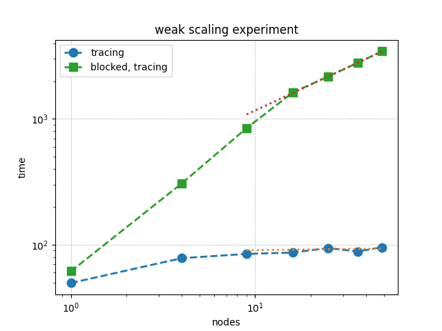

Performance Effect of get() Outside of a Task¶
This is a weak scaling plot of Red-Black Gauss-Seidel iteration for Poisson’s Equation in 2D. The green squares are the weak scaling results when get() is used outside of a task. Already at fifty nodes there is a 30X performance difference. This blocked solution time scales as \(\left(\texttt{nodes}\right)^{0.7}\). So this difference will only get worse.
Forcing Bulk-Synchronousity in Your Code¶
Note
All FleCSI programs have a top-level task (TLT) from which all FleCSI tasks are launched.
The TLT is all the code that is run outside of a task. Simply put, if
the code launches any tasks, e.g., flecsi::execute<task::...>(...), it is
the TLT.
Note
Any blocking of the code in the TLT (like waiting on the result of get()) prevents any other tasks to be queued up for the runtime. This blocking forces bulk synchronous computation.
This is exactly what we have done when we call get() on the
residual future below.
using namespace flecsi;
std::size_t sub{3};
std::size_t ita{0};
static exec::trace t; // trace object
t.skip(); // skip tracing first time through loop
do {
auto g = t.make_guard(); // turn tracing on for enclosing do loop
for(std::size_t i{0}; i < sub; ++i) {
execute<task::red>(m, ud(m), fd(m));
execute<task::black>(m, ud(m), fd(m));
}
ita += sub;
execute<task::discrete_operator>(m, ud(m), Aud(m));
auto residual = reduce<task::diff, exec::fold::sum>(m, fd(m), Aud(m));
err = std::sqrt(residual.get());
flog(info) << "residual: " << err << " (" << ita << " iterations)"
<< std::endl;
} while(ita < max_iterations.value());
Removing Bulk-Synchronousity from Your Code¶
Here we pass the future to the print_residual task. Calling get() inside a task is correct as it allows the runtime to continue with other tasks while print_residual is waiting on the reduction.
using namespace flecsi;
std::size_t sub{3};
std::size_t ita{0};
static exec::trace t; // trace object
t.skip(); // skip tracing first time through loop
do {
auto g = t.make_guard(); // turn tracing on for enclosing do loop
for(std::size_t i{0}; i < sub; ++i) {
execute<task::red>(m, ud(m), fd(m));
execute<task::black>(m, ud(m), fd(m));
}
ita += sub;
execute<task::discrete_operator>(m, ud(m), Aud(m));
auto residual = reduce<task::diff, exec::fold::sum>(m, fd(m), Aud(m));
execute<task::print_residual>(residual, ita+sub);
} while(ita < max_iterations.value());
Note
Residual tolerance termination conditions are usually employed for solvers, but FleCSI does not yet support futures in this way.
void task::print_residual(future<double> residual, std::size_t ita) {
double err = std::sqrt(residual.get());
std::cout << "residual: " << err << " (" << ita << " iterations)"
<< std::endl << std::flush;
}
When to Call get() Outside of a Task¶
Basically, never call get() outside of a task. If you are using it in initialization once, that probably won’t hurt much.